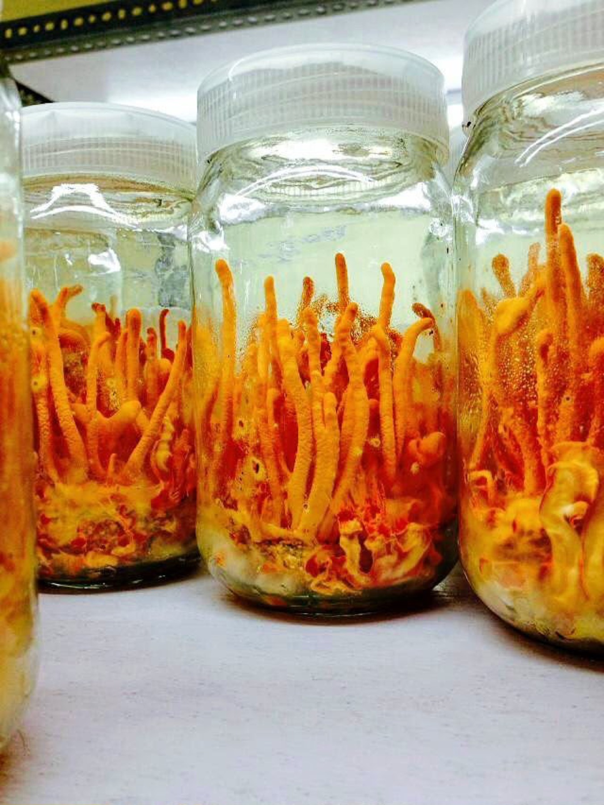
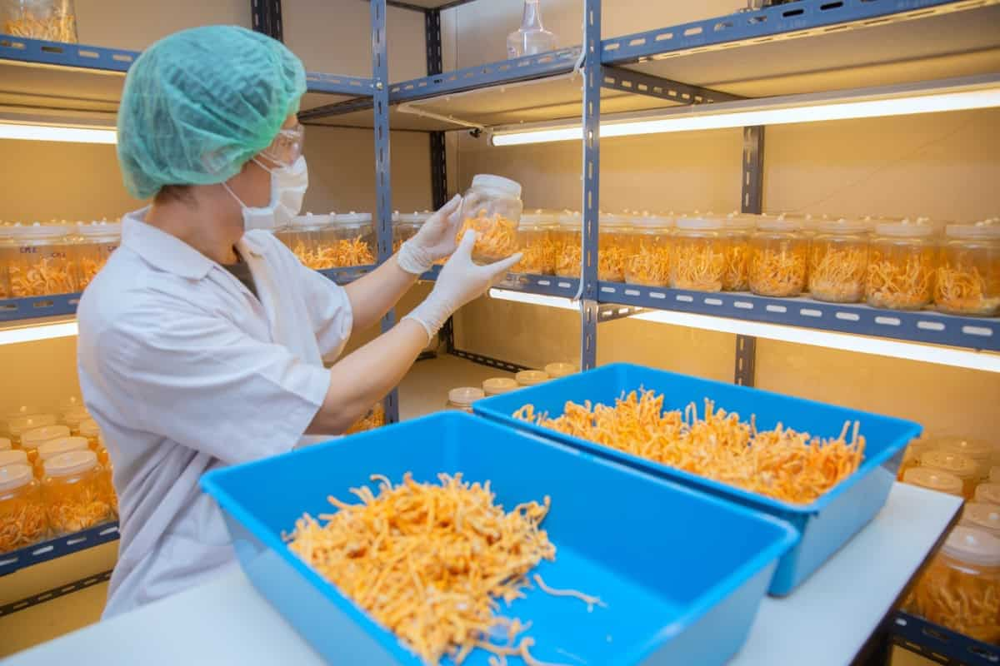

Cordyceps militaris,
cultivated under controlled indoor conditions.
Starting with one ingredient. Grown indoors on our own substrate in Bengaluru, and documented from strain to specification.
Every enquiry is read and answered by a person.
- Rooted in nature.
- Backed by science.
- Built for wellness.
Watched as it grows.
Verified by independent laboratory testing.
Four things have to be true before anything leaves Bengaluru. We wrote them down before the first harvest, so you can hold us to them.
-
Strain & substrate
A single documented C. militaris strain. Inputs traced to lot, and every substrate batch recorded before inoculation.
-
Controlled grow
Temperature, humidity, air and light held to set points and logged continuously. No field variables. No season.
-
Harvest & drying
Our protocol specifies cutting at defined maturity and to a defined length, then drying low and slow.
-
Independent testing
Independent laboratory testing before any batch is released, with its certificate of analysis issued alongside it.
Farmologic is a registered company in Bengaluru. The facility is running, the first cultivation is under way, and the quality system described here is written, built into the facility and ready for the first batch. We name a certification once it is held, and never before.
From spore to sealed batch.
Wild-collected material varies by altitude, season and collector. Indoors, the variables are ours.
-
Inoculation
Spore to substrate
Liquid culture from a single documented strain is introduced to a sterilised substrate in a still-air environment. Every jar is labelled to its batch before it leaves the bench.
-
Colonisation
The mycelium takes hold
White mycelium runs through the substrate in the dark. Jars are inspected on a fixed schedule; anything showing contamination is pulled and recorded, never blended back in.
-
Fruiting
Colour under light
Light, fresh air and a drop in temperature trigger the orange fruiting bodies. Conditions at this stage are held tightly and logged.
-
Harvest & verify
Cut, dried, verified
Harvest at defined maturity, drying at low temperature, then a representative sample to an independent laboratory. No batch will be released until its result is back and inside specification. That is the protocol the first harvest will run against.

Quality doesn’t begin after harvest. It begins with every decision made before it.
Before an ingredient reaches a laboratory, it begins in the substrate we build, the water we use, the strain we keep, and patient cultivation. The choices made at this stage shape everything that follows.
At Farmologic, we believe exceptional wellness products are never created by chance. They are built through thoughtful sourcing, uncompromising standards, scientific validation, and respect for nature at every step.
Because when quality is protected from the very beginning, trust becomes the final ingredient.
-
Responsibly sourced
Inputs traced to lot. Nothing anonymous goes into a Farmologic substrate.
-
Rigorously tested
Independent testing for purity, potency and safety before any batch will be released.
-
Science-backed
Assay methods stated up front, so your QA team can check our work.
-
Made for real wellness
Grown for formulations people take every day, not for a spec sheet alone.

The finest harvest begins with the highest standards.Farmologic
- Trust before marketing.
- Quality before profit.
- Science before claims.
- Transparency before sales.
Where it came from is the hard part.
Cordyceps reaches buyers through long supply chains, and in that market traceability and consistency can be difficult to establish. A specification tells you what material should contain. It does not tell you where it was grown, or how.
That gap is what we are built around. One facility, one documented strain, and a written record from substrate to specification, so the answer to “where did this come from” is a document rather than an assurance.
Register interest in the first harvest
Tell us what you are formulating and we will send the first-batch specification as soon as it is issued. Company, name and work email is all we ask for.
What buyers ask first
Is this fruiting body or mycelium on grain?
Fruiting body only. Farmologic does not supply mycelium-on-grain material, and the specification states the part used so your label claim can be accurate.
What cordycepin content can we expect?
We grow to a target and will confirm it by HPLC. Cordycepin content in fruiting bodies varies with strain and growing conditions, so the figure that matters is the one measured on the batch you receive.
Do you supply a certificate of analysis?
Yes. Our protocol specifies independent testing for cordycepin and adenosine, plus heavy metals, microbiology and pesticide residue, before a batch is released. Each certificate is issued with its batch and available on request.
Are you certified?
Farmologic is a registered company working to a written specification backed by independent laboratory testing. Certification applications are under way, and we name each one once it is held.
Can you match a specification we already run?
Often, yes. Send us your incoming-material specification and we will tell you plainly whether we can meet it and what it would change about the grow. If we cannot, we will say so.
What does it cost?
Price on request, against your specification, format and volume. We quote to what you actually need rather than from a list.
Register interest in the first harvest.
The first grow is genuinely limited. Tell us what you are formulating and we will come back with the first-batch specification, and a sample once material is ready.